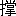

このあいびきは先年仏蘭西で死去した、露国では有名な小説家、ツルゲーネフという人の端物の作です。今度徳富先生の御依頼で訳してみました。私の訳文は我ながら不思議とソノ何んだが、これでも原文はきわめておもしろいです。
秋九月中旬というころ、一日自分がさる
樺の林の中に座していたことがあッた。今朝から小雨が降りそそぎ、その晴れ間にはおりおり生ま
煖かな日かげも射して、まことに気まぐれな空ら合い。あわあわしい白ら雲が空ら一面に棚引くかと思うと、フトまたあちこち瞬く間雲切れがして、むりに押し分けたような雲間から澄みて
怜悧し
気に見える人の眼のごとくに
朗かに晴れた蒼空がのぞかれた。自分は座して、四顧して、そして耳を傾けていた。木の葉が頭上で
幽かに
戦いだが、その音を聞たばかりでも季節は知られた。それは春先する、おもしろそうな、笑うようなさざめきでもなく、夏のゆるやかなそよぎでもなく、永たらしい話し声でもなく、また末の秋のおどおどした、うそさぶそうなお
饒舌りでもなかッたが、ただようやく聞取れるか聞取れぬほどのしめやかな私語の声であった。そよ吹く風は忍ぶように木末を伝ッた。照ると曇るとで、雨にじめつく林の中のようすが間断なく移り変ッた。あるいはそこにありとある物すべて一時に微笑したように、
隈なくあかみわたッて、さのみ繁くもない樺のほそぼそとした幹は思いがけずも白絹めく、やさしい
光沢を帯び、地上に散り
布いた、細かな、落ち葉はにわかに日に映じてまばゆきまでに
金色を放ち、
頭をかきむしッたような「パアポロトニク」（蕨の類い）のみごとな茎、しかも
熟えすぎた葡萄めく色を帯びたのが、際限もなくもつれつからみつして、目前に透かして見られた。
あるいはまたあたり一面にわかに薄暗くなりだして、瞬く間に物のあいろも見えなくなり、樺の木立ちも、降り積ッたままでまだ日の眼に逢わぬ雪のように、白くおぼろに
霞む――と小雨が忍びやかに、怪し気に、私語するようにパラパラと降ッて通ッた。樺の木の葉はいちじるしく光沢は
褪めていてもさすがになお青かッた、がただそちこちに立つ
稚木のみはすべて赤くも黄ろくも色づいて、おりおり日の光りが今ま雨に濡れたばかりの細枝の
繁味を
漏れて滑りながらに脱けてくるのをあびては、キラキラときらめいていた。鳥は一ト声も音を聞かせず、皆どこにか隠れて
窃まりかえッていたが、ただおりふしに人をさみした
白頭翁の声のみが、
故鈴でも鳴らすごとくに、響きわたッた。この樺の林へ来るまえに、自分は猟犬を曳いて、さる高く茂ッた
白楊の林を過ぎたが、この樹は――白揚は――ぜんたい虫がすかぬ。幹といえば、蒼味がかッた
連翹色で、葉といえば、鼠みともつかず緑りともつかず、下手な
鉄物細工を見るようで、しかも
長いっぱいに頸を引き伸して、
大団扇のように空中に立ちはだかッて――どうも虫が好かぬ。長たらしい茎へ無器用にヒッつけたような薄きたない円葉をうるさく振りたてて――どうも虫が好かぬ。この樹の見て快よい時といっては、ただ背びくな灌木の中央に一段高く
聳えて、入り日をまともに受け、根本より木末に至るまでむらなく樺色に染まりながら、風に
戦いでいる夏の夕暮か、――さなくば空
名残りなく晴れわたッて風のすさまじく吹く日、あおそらを影にして立ちながら、ザワザワざわつき、風に吹きなやまされる木の葉の今にも梢をもぎ離れて遠く吹き飛ばされそうに見える時かで。とにかく自分はこの樹を好まぬので、ソコデその白楊の林には憩わず、わざわざこの樺の林にまで
辿りついて、地上わずか離れて下枝の生えた、雨
凌ぎになりそうな木立を見たてて、さてその下に
栖を構え、あたりの風景を跳めながら、ただ遊猟者のみが覚えのあるという、例の穏かな、罪のない夢を結んだ。
何ン時ばかり眠ッていたか、ハッキリしないが、とにかくしばらくして眼を覚ましてみると、林の中は日の光りが到らぬ
隈もなく、うれしそうに騒ぐ木の葉を漏れて、はなやかに晴れた蒼空がまるで火花でも散らしたように、鮮かに見わたされた。雲は狂い廻わる風に吹き払われて形を
潜め、空には
繊雲一ツだも留めず、大気中に含まれた一種清涼の気は人の気を
爽かにして、穏かな晴夜の来る前触れをするかと思われた。自分はまさに起ち上りてまたさらに運だめし（ただし銃猟の事で）をしようとして、フト端然と坐している人の姿を認めた。
眸子を定めてよく見れば、それは農夫の娘らしい少女であッた。二十歩ばかりあなたに、物思わし気に頭を垂れ、力なさそうに両の手を膝に落して、端然と坐していた。
旁々の手を見れば、
半はむきだしで、その上に載せた草花の束ねが呼吸をするたびに
縞のペチコートの上をしずかにころがッていた。清らかな白の表衣をしとやかに着なして、
咽喉元と手頸のあたりでボタンをかけ、大粒な黄ろい飾り玉を二列に分ッて
襟から胸へ垂らしていた。この少女なかなかの美人で、象牙をも
欺むく色白の額ぎわで巾の狭い緋の
抹額を締めていたが、その下から美しい
鶉色で、しかも白く光る濃い頭髪を叮嚀に
梳したのがこぼれでて、二ツの半円を描いて、左右に別れていた。顔の他の部分は日に焼けてはいたが、薄皮だけにかえって見所があった。
眼ざしは分らなかッた、――始終下目のみ使っていたからで、シカシその代り秀でた細眉と長い
睫毛とは明かに見られた。睫毛はうるんでいて、
旁々の頬にもまた
蒼さめた唇へかけて、涙の伝った
痕が夕日にはえて、アリアリと見えた。総じて首つきが愛らしく、鼻がすこし大く円すぎたが、それすらさのみ眼障りにはならなかッたほどで。とり分け自分の気に入ッたはその
面ざし、まことに柔和でしとやかで、とり繕ろッた気色は
微塵もなく、さも憂わしそうで、そしてまたあどけなく途方に暮れた趣きもあッた。たれをか待合わせているのとみえて、何か幽かに物音がしたかと思うと、少女はあわてて頭を
擡げて、振り反ってみて、その大方の涼しい眼、牝鹿のもののようにおどおどしたのをば、薄暗い木蔭でひからせた。クワッと見ひらいた眼を物音のした方へ向けて、シゲシゲ視詰めたまま、しばらく聞きすましていたが、やがて溜息を吐いて、静にこなたを振り向いて、前よりはひときわ低く屈みながら、またおもむろに花を
択り分け初めた。
擦りあかめたまぶちに、厳しく
拘攣する唇、またしても濃い睫毛の下よりこぼれでる涙の
雫は流れよどみて日にきらめいた。こうしてしばらく時刻を移していたが、その間少女は、かわいそうに、みじろぎをもせず、ただおりおり手で涙を拭いながら、聞きすましてのみいた、ひたすら聞きすましてのみいた……フとまたガサガサと物音がした、――少女はブルブルと震えた。物音は
罷まぬのみか、しだいに高まッて、近づいて、ついに思いきッた
濶歩の音になると――少女は起きなおッた。何となく心おくれのした気色。ヒタと視詰めた眼ざしにおどおどしたところもあッた、心の焦られて堪えかねた気味も見えた。しげみを漏れて男の姿がチラリ。少女はそなたを注視して、にわかにハッと顔を
赧らめて、我も
仕合とおもい顔にニッコリ笑ッて、起ち上ろうとして、フトまた萎れて、蒼ざめて、どきまぎして、――先の男が傍に来て立ち留ってから、ようやくおずおず頭を
擡げて、念ずるようにその顔を視詰めた。
自分はなお物蔭に
潜みながら、怪しと思う心にほだされて、その男の顔をツクヅク眺めたが、あからさまにいえば、あまり気には入らなかった。
これはどう見ても弱冠の素封家の、あまやかされすぎた、給事らしい男であった。衣服を見ればことさらに風流をめかしているうちにも、またどことなくしどけないのを飾る気味もあッて、主人の
着故るしめく、茶の短い
外套をはおり、はしばしを
連翹色に染めた、
薔薇色の頸巻をまいて、金モールの
抹額をつけた黒帽を
眉深にかぶッていた。
白襯衣の角のない襟は用捨もなく押しつけるように耳朶を
えて、また両頬を擦り、
糊で固めた腕飾りはまったく手頸をかくして、赤い先の曲ッた指、Turquoise（宝石の一種）製の Myosotis（草の名）を飾りにつけた金銀の指環を幾個ともなくはめていた指にまで至ッた。世には一種の面貌がある、自分の観察したところでは、つねに男子の気にもとる代り、不幸にも女子の気に
適う面貌があるが、この男のかおつきはまったくその一ツで、桃色で、清らかで、そしてきわめて
傲慢そうで。己があらけない
貌だちに
故意と人を軽ろしめ世に
倦みはてた色を装おうとしていたものとみえて、絶えずたださえ
少いさな、薄白く、鼠ばみた眼を細めたり、眉をしわめたり、口角を引き下げたり、しいて
欠伸をしたり、さも気のなさそうな、やりばなしな風を装うて、あるいは勇ましく捲き上ッたもみあげを撫でてみたり、または厚い上唇の上の黄ばみた髭を引張てみたりして――ヤどうも見ていられぬほどに様子を売る男であッた。待合せていた例の少女の姿を見た時から、モウ様子を売りだして、ノソリノソリと大股にあるいて傍へ寄りて、立ち止ッて、肩をゆすッて、両手を外套のかくしへ押し入れて、気のなさそうな眼を走らしてジロリと少女の顔を見流して、そして下にいた。
「待ッたか？」ト初めて口をきいた、なおどこをか眺めたままで、欠伸をしながら、足を
揺かしなから「ウー？」
少女はきゅうに返答をしえなかッた。
「どんなに待ッたでしょう」トついにかすかにいッた。
「フム」ト言ッて、先の男は帽子を脱した。さももったいらしくほとんど眉ぎわよりはえだした濃い縮れ髪を撫でて、
鷹揚にあたりを
四顧して、さてまたソッと帽子をかぶッて、大切な頭をかくしてしまった。「あぶなく忘れるところよ。それにこの雨だもの！」トまた欠伸。「用は多し、そうそうは仕切れるもんじゃない、そのくせややともすれば小言だ。トキニ出立は明日になッた……」
「あした！」ト少女はビックリして男の顔を視詰た。
「あした……オイオイ頼むぜ」ト男は
忌々しそうに口早に言ッた。少女のブルブルと震えて差うつむいたのを見て。「頼むぜ『アクーリナ』泣かれちゃアあやまる。おれはそれが大嫌いだ」。ト低い鼻に皺を寄せて、「泣くならおれはすぐ帰ろう……何だばか気た――泣く！」「アラ泣はしませんよ」、トあわてて「アクーリナ」は言ッた、せぐりくる涙をようやくのことで呑みこみながら。しばらくして、「それじゃ明日お立ちなさるの。いつまた逢われるだろうネー」
「逢われるよ、心配せんでも。さよう、来年――でなければさらいねんだ。旦那は
彼得堡で役にでも就きたいようすだ」、トすこし鼻声で気のなさそうに言ッて「ガ事に寄ると外国へ往くかもしれん」。
「もしそうでもなッたらモウわたしの事なんざア忘れておしまいなさるだろうネー」ト言ッたが、いかにも心細そうであッた。
「なぜ？ だいじょうぶ！ 忘れはしない、ガ『アクーリナ』ちッとこれからは気をつけるがいいぜ、わるあがきもいい加減にして、おやじの言うこともちッとは聴くがいい。おれはだいじょうぶだ、忘れる気遣いはない、――それはなア……イ」、ト平気で
伸をしながら、また欠伸をした。
「ほんとに、『ヴィクトル、アレクサンドルイチ』、忘れちゃアいやですよ」。ト少女は祈るがごとくに言ッた、
「こんなにお前さんの事を思うのも、慾徳ずくじゃないから……おとっさんのいうこと聴けとおいいなさるけれど……わたしにはそんなこたアできないワ……」
「なぜ？」ト
仰お向けざまにねころぶ拍子に、両手を頭に敷きながら、あたかも胸から押しだしたような声で尋ねた。
「なぜといッてお前さん――アノ始末だものオ……」
少女は口をつぐんだ。「ヴィクトル」は
袂時計の鎖をいらいだした。
「オイ、『アクーリナ』、おまえだッてばかじゃあるまい」トまた話しだした、「そんなくだらんことをいうのは置いてもらおうぜ。おれはお前のためを思ッていうのだ、わかッたか？ もちろんお前はばかじゃない、やッぱりお袋の
性を受けてるとみえて、それこそ
徹頭徹尾いまのソノ農婦というでもないが、シカシともかくも教育はないの――そんなら人のいうことならハイと言ッて聞てるがいいじゃないか？」
「だッてこわいようだもの」。
「ツ、こわい。何もこわいことはちッともないじゃないか？ 何だそれは」、と「アクーリナ」の傍へすりよッて「花か？」
「花ですよ」ト言ったが、いかにも哀れそうであッた。
「この清涼茶は今あたしが
摘んできたの」トすこし気の乗ッたようす「これを牛の子にたべさせると薬になるッて。ホラ Bur-marigole ――そばッかすの薬。チョイとごらんなさいよ、うつくしいじゃありませんか、あたし産れてからまだこんなうつくしい花ア見たことないのよ。ホラ Myosotis、ホラ
菫……ア、これはネ、お前さんにあげようと思ッて摘んできたのですよ」ト言いながら、黄ろな野草の花の下にあッた、青々とした Bluebottle の、細い草で束ねたのを取りだして「
入りませんか？」
「ヴィクトル」はしぶしぶ手を出して、花束を取ッて、気のなさそうに匂いを嗅いで、そしてもったいをつけて物思わしそうに空を視あげながら、その花束を指頭でまわしはじめた。「アクーリナ」は「ヴィクトル」の顔をジッと視詰めた……その
愁然とした眼つきのうちになさけを含め、やさしい
誠心を込め、吾仏とあおぎ敬う気ざしを現わしていた。男の気をかねていれば、あえて泣顔は見せなかったが、その代り名残り惜しそうにひたすらその顔をのみ眺めていた。それに「ヴィクトル」といえば史丹のごとくに
臥そべッて、グッと大負けに負けて、人柄を崩して、いやながらしばらく「アクーリナ」の本尊になって、その礼拝祈念を受けつかわしておった。その顔を、あから顔を見れば、ことさらに作ッた
偃蹇恣雎、無頓着な色を帯びていたうちにも、どこともなく得々としたところが見透かされて、憎かった。そして顧みて「アクーリナ」を視れば、魂が止め度なく身をうかれでて、男の方へのみ引かされて、甘えきっているようで――アアよかッた！ しばらくして「ヴィクトル」は、……「ヴィクトル」は花束を草の上に取り落してしまい、青銅の
框を
嵌めた眼鏡を外套の
隠袋から取りだして、眼へ
宛がおうとしてみた、がいくら眉を
皺め、頬を捻じ上げ、鼻まで
仰お向かせて眼鏡を支えようとしてみても、――どうしても外れて手の中へのみ落ちた。
「なにそれは？」と「アクーリナ」がケゲンな顔をして尋ねた。
「眼鏡」と「ヴィクトル」は
傲然として答えた。
「それをかけるとどうかなるの？」
「よく見えるのよ」。
「チョイと拝見な」。
「ヴィクトル」は顔をしかめたが、それでも眼鏡は渡した。
「こわしちゃいけんぜ」。
「だいじょうぶですよ」トこわごわ眼鏡を眼のそばへ持ってきて「オヤ何にも見えないよ」トあどけなくいッた。
「そ、そんな……眼を細くしなくッちゃいかない、眼を」トさながら不機嫌な教師のような声で叱ッた。「アクーリナ」は眼鏡を
宛てがッていた方の眼を細めた。「チョッ、まぬけめ、そッちの眼じゃない、こッちの眼だ」トまた大声で叱ッて、仕替える間もあらせず、「アクーリナ」の持ッていた眼鏡をひッたくッてしまッた。
「アクーリナ」は顔を赤くして、気まりわるそうに笑ッて、よそをむいて、
「どうでも私たちの持つもんじゃないとみえる」。
「知れたことサ」。
かわいそうに、「アクーリナ」は太い溜息をして黙してしまッた。
「アア、『ヴィクトル、アレクサンドルイチ』、どうかして、いっしょにいられるようにはならないもんかネー」トだしぬけに言ッた。
「ヴィクトル」は衣服の
裾で眼鏡を拭い、ふたたび隠袋に納めて、
「それゃア当座四五日はちッとは淋しかろうサ」ト寛大の処置をもって、手ずから「アクーリナ」の肩を軽く叩いた。「アクーリナ」はその手をソット肩から外して、おずおず接吻した。「ちッとは淋しかろうサ」トまた繰返して言ッて、得々と微笑して、「だが
已を得ざる次第じゃないか？ マア積ッてもみるがいい、旦那もそうだが、おれにしてもこんなケチな所にゃいられない、けだしモウじきに冬だが、田舎の冬というやつは忍ぶべからずだ、それから思うと
彼得堡、たいしたもんだ！ うそとおもうなら
往ッてみるがいい、お前たちが夢に見たこともないけっこうなものばかりだ。こう立派な建家、町、カイ社、文明開化――それゃ不思議なものよ！……」（「アクーリナ」は小児のごとくに、口をあいて、一心になッて聞き惚れていた）
「ト
噺をして聞かしても」ト「ヴィクトル」は寝返りを打ッて、
「むだか。お前にゃ空々寂々だ」。
「なぜえ、『ヴィクトル、アレクサンドルイチ』、わかりますワ、よく解りますワ」。
「ホ、それはおえらいな！」
「アクーリナ」は萎れた。
「なぜこのごろはそう
邪慳だろう？」ト頭をうなだれたままで言ッた。
「ナニこのごろは邪慳だと……？」ト何となく不平そうで「このごろ！ フフムこのごろ！……」
両人とも暫時無言。
「ドレ帰ろうか」ト「ヴィクトル」は
臂を杖に起ちあがろうとした。
「アラモウちッとおいでなさいよ」ト「アクーリナ」は祈るように言ッた。
「なぜ？……暇乞いならモウこれですんでいるじゃないか？」
「モウちッとおいでなさいよ」。
「ヴィクトル」はふたたび横になッて、口笛を吹きだした。「アクーリナ」はその顔をジッと視詰めた、しだいしだいに胸が波だッてきた様子で、唇も
拘攣しだせば、今まで青ざめていた頬もまたほの赤くなりだした……
「ヴィクトル、アレクサンドルイチ」トにじみ声で「お前さんも……あんまり……あんまりだ」。
「何が？」ト眉を皺めて、すこし起きあがッて、キッと「アクーリナ」の方を向いた。
「あんまりだワ、『ヴィクトル、アレクサンドルイチ』、今別れたらまたいつ逢われるかしれないのだから、なんとか一ト言ぐらい言ッたッてよさそうなものだ、何とか一ト言ぐらい……」
「どういえばいいというんだ？」
「どういえばいいかしらないけれど……そんなこたア百も承知しているくせに……モウ今が別れだというのに一ト言も……あんまりだからいい！」
「おかしなことをいうやつだな！ どういえばいいというんだ？」
「何とか一ト言くらい……」
「エーくどい！」ト忌々しそうに言ッて、「ヴィクトル」は起ちあがッた。
「アラかに……かにしてちょうだいよ」ト「アクーリナ」は早や口に言ッた、かろうじて涙を呑みこみながら。
「腹も立たないが、お前のわからずやにも困る……どうすればいいというんだ？ もともと女房にされないのは得心ずくじゃないか？ 得心ずくじゃないか？ そんなら何が不足だ？ 何が不足だよ？」トさながら返答を
催促するように、グッと「アクーリナ」の顔を覗きこんで、そして指の股をひろげて手をさしだした。
「何も不足……不足はないけれど」ト
吃りながら、「アクーリナ」もまた震える手先をさしだして、「ただ何とか一ト言……」
涙をはらはらと流した。
「チョッ
極りを始めた」、ト「ヴィクトル」は平気で言ッた、後から
眉間へ帽子を滑らしながら。
「何も不足はないけれど」ト「アクーリナ」は両手を顔へ苑てて、
啜り上げて泣きながら、ふたたび言葉を
続いだ、「今でさえ家にいるのがつらくッてつらくッてならないのだから、これから先はどうなることかと思うと心細くッて心細くッてなりゃアしない……きっとむりやりにお嫁にやられて……苦労するに違いないから……」
「ならべろならべろ、たんと並べろ」ト「ヴィクトル」は足を踏み替えながら、口の裏で言ッた。
「だからたッた一ト言、一ト言何とか……『アクーリナ』おれも……お、お、おれも……」
不意に込み上げてくる涙に、胸がつかえて、言いきれない――「アクーリナ」は草の上へうつぶしに倒れて苦しそうに泣きだした……総身をブルブル震わして頂門で高波を打たせた……こらえに堪えた溜め涙の関が一時に切れたので。「ヴィクトル」は泣くずおれた「アクーリナ」の背なかを眺めて、しばらく眺めて、フト首をすくめて、身を転じて、そして大股にゆうゆうと立ち去ッた。
しばらくたッた……「アクーリナ」はようやく涙をとどめて、頭を
擡げて、跳り上ッて、あたりを視まわして、手を
拍た、跡を追ッて駈けだそうとしたが、足が利かない――バッタリ膝をついた……モウ見るに見かねた、自分は
木蔭を躍りでて、かけよろうとすると、「アクーリナ」はフト振りかえッて自分の姿を見るやいなや、たちまち忍び音にアッと叫びながら、ムックと
跳ね起きて、木の間へ駈け入ッた、かと思うとモウ姿は見えなくなった。草花のみは取り残されて、歴乱としてあたりに
充ちた。
自分はたちどまった、花束を拾い上げた、そして林を去ッてのらへ出た。日は青々とした空に低く漂ッて、射す影も蒼さめて冷かになり、照るとはなくてただジミな水色のぼかしを見るように四方に充ちわたツた。日没にはまだ半時間もあろうに、モウゆうやけがほの赤く天末を染めだした。黄ろくからびた
刈科をわたッて烈しく吹きつける
野分に催されて、そりかえッた細かな落ち葉があわただしく起き上り、林に沿うた往来を横ぎって、自分の側を駈け通ッた、のらに向いて壁のようにたつ林の一面はすべてざわざわざわつき、細末の玉の屑を散らしたように、
煌きはしないが、ちらついていた、また枯れ草、
莠、
藁の嫌いなくそこら一面にからみついた蜘蛛の巣は風に吹き
靡かされて波たッていた。
自分はたちどまった……心細くなッてきた、眼に
遮る物象はサッパリとはしていれど、おもしろ気もおかし気もなく、さびれはてたうちにも、どうやら間近になッた冬のすさまじさが見透かされるように思われて。小心な
が重そうに羽ばたきをして、烈しく風を切りながら、頭上を高く飛び過ぎたが、フト首を回らして、横目で自分をにらめて、きゅうに飛び上ッて、声をちぎるように
啼きわたりながら、林の向うへかくれてしまッた。鳩が幾羽ともなく群をなして勢込んで穀倉の方から飛んできたが、フト柱を建てたように舞い昇ッて、さてパッといっせいに野面に散ッた――ア、秋だ！ 誰だか禿山の向うを通るとみえて、から車の音が
虚空に響きわたッた……
自分は帰宅した、が可哀そうと思ッた「アクーリナ」の姿は久しく眼前にちらついて、忘れかねた。持帰ッた花の束ねは、からびたままで、なおいまだに秘蔵してある………………